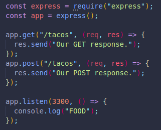
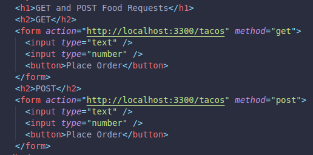
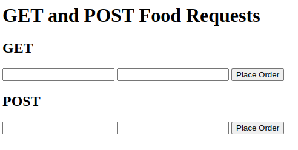
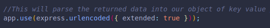
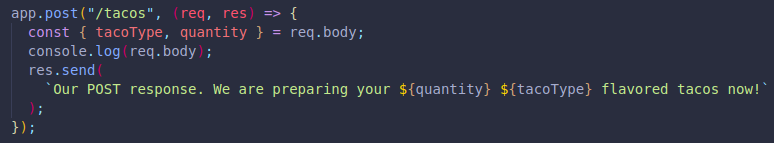
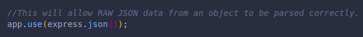
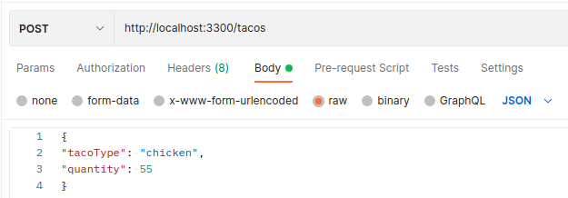

This is the default request type, it helps us:
Retrieve information
Data sent via query string
Information is visible in the URL.
Limited amount of data can be sent.
Used to post data to the server.
We can write/create/update
We can include a body, like a JS or JSON object, plain text, HTML. We do this instead of using a query string.
We can send any sort of data. We can directly interact with a server, unlike GET which doesn't update/make changes, delete or create new content.
There's more flexibility overall.
WHen we specify a path for the URL the user enters, it is important to understand that even if the path is the same, they will get different results if they use a get request instead of a post request.
This would depend on what response we provide for each app.get() or app.post() response.
These 2 forms would provide a different result, depending on which form is submitted.
 RESULTS IN -->
We can now extract the data from the post request! The returned data is parsed automatically, we just need to specify the parsing type.
request.body will provide us the information entered.
It is undefined by default, but we can explicitly state how it should be parsed.
We do this with app.use():
This will save the data into key value pairs in an object, which we can console log or save to our databases.
WE MUST GIVE OUR INPUTS A NAME, SINCE IT WILL BE THE KEY NAME OF OUR OBJECT, OTHERWISE WE WILL BE RETURNED AN EMPTY OBJECT.
Instead of just console logging the object for ourselves, we can destructure it to provide a more personal response:
(We gave the text input a name of tacoType and the number input a name of quantity)
All this works with form data, which is common, but if we wanted to use an API tool and enter the values RAW (JSON), from an object, we would need to specify a parsing type for JSON too:
 